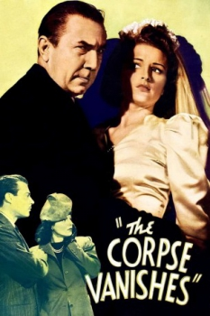

Country:United States, 63 minutes
Spoken languages:English
Genres:Sci-Fi, Horror
Director(s):Wallace Fox
Writer(s):Harvey Gates
Video Codec:Unknown
Number: 58


Certification:NR
Storyline:
A scientist keeps his wife young by killing, stealing the bodies of, and taking the gland fluid from virgin brides.
Cast:

Medium: Original DVD,
Comments: Part of: 100 Greatest Horror Classics
Loaned: No
Aspect ratio: Unknown